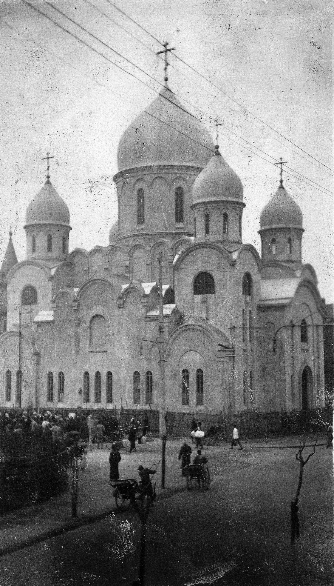
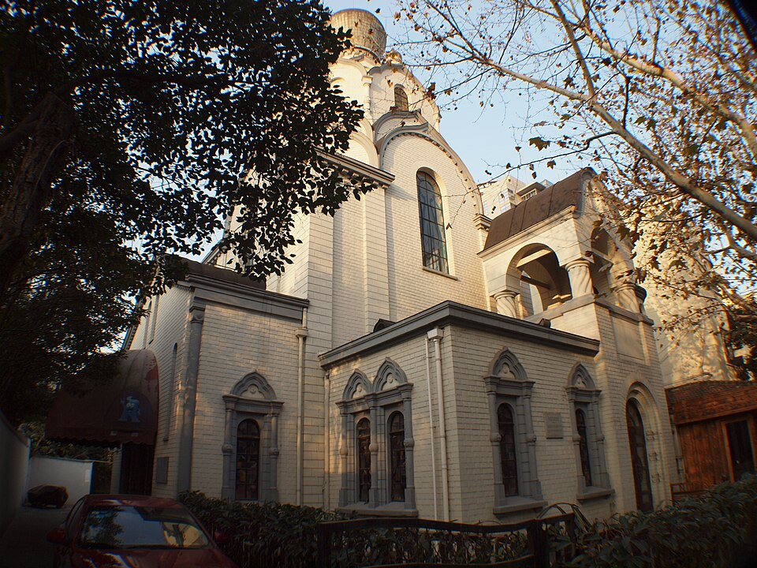

Остановка 2
第2站
Два храма两座教堂
Синьлэ, дом 55. Гаолань, дом 16.
新乐路55号。皋兰路16号。


Прочитать за минуту一分钟读完
На Синьлэ, дом 55, стоит собор иконы Божией Матери «Споручница грешных». По-китайски его коротко зовут 圣母大堂.
新乐路55号是圣母大堂，全名很长，供的是“罪人之保障”圣母像。同学口语里就叫圣母大堂。
Узнать подробнее了解更多
Угловой камень заложили в мае 1933 года. Деньги собирали сами эмигранты. Чертил архитектор Яков Лихонос. При епископе Иоанне дом довели в 1936–1937 годах. Высота около 35 метров. Внутрь могло войти около 2500 человек. Снаружи он напоминает храм Христа Спасителя в Москве. Тот храм в Москве снесли, а здесь люди собрали свой.
На Гаолань, 16, Никольский храм. Его заложили раньше собора. Раньше улица была рю Корней, во французском сеттльменте. Деньги собирал генерал Глебов, на храм в память о Николае II. На странице китайской Википедии — сто тысяч серебряных долларов. Чертёж отдал архитектор, там он записан как 亚龙. Камень заложили 18 декабря 1932 года. Освятили 31 марта 1934-го. Стиль на странице назван византийским. Куполов было девять, золотых. Внутрь, по той странице, входило 400–500 человек. Полное имя генерала в других статьях пишут иначе, я его не выбираю.
После 1949 года многие русские уехали. Храм закрыли в августе 1955-го. В 1966-м купола снесли, дом занял завод. Потом дом взяли под охрану, купола собрали снова, уже мозаикой, не золотом. С улицы они видны. Это не те первые.
Собор и Никольский храм я кладу в одну историю. Революция и Гражданская война уже прошли, а семьи в Шанхае всё равно держали церковь.
В конце 2019 года внутри открыли книжный 思南书局. На странице сказано, что церковь при этом оставили. И что 27 декабря 2025 года магазин закрылся: кончилась аренда, дом сдают. 7 ноября 2026 я сама была там на службе. Поэтому строчку «сейчас пусто» с чужой страницы не списываю. Купола с улицы те же.
1933年5月放下基石。钱是侨民自己凑的。图纸是建筑师雅科夫·利霍诺斯画的。伊望主教在的时候，1936到1937年盖完。高大约35米。里面大约坐得下2500人。外观会让人想起莫斯科的基督救世主大教堂。莫斯科那座被拆了，这里的人把自己的盖了起来。
皋兰路16号是圣尼古拉堂。奠基比大堂早。以前在法租界，路叫高乃依路。钱是格列博夫将军为纪念尼古拉二世凑的。中文维基写十万银元。图纸是一位建筑师白送的，那页写他叫亚龙。1932年12月18日奠基，1934年3月31日祝圣。风格那页称为拜占庭式。原来有九个金顶。里面那页写坐得下400到500人。将军的全名别的文章写得不一样，我不定。
1949年以后很多俄国人离开了。教堂1955年8月关闭。1966年圆顶被拆，房子给工厂用了。后来房子列入保护，圆顶又装回去，是马赛克，不是金子。街上看得见。这不是最初那一批。
两座房子说的是同一件事。革命和内战以后，俄国人住在上海，把教堂留在这里。
2019年底里面开了思南书局。那页写教堂的用处还留着。又写2025年12月27日书店租约到期关了，房子在招租。2026年11月7日我自己在里面做过礼拜。所以「现在空着」我不从别人的页面抄过来。街上的圆顶还是那样。
На карте在地图上
Важно не перепутать别弄混
7 ноября 2026 я была на одной службе. Это не значит, что службы идут каждый день. Книжный на странице закрыт 27 декабря 2025-го, а «дом пустой» я не списываю.
2026年11月7日我做过一次礼拜。这不等于天天有礼拜。书店那页写2025年12月27日关了，「房子空着」我不照抄。
Вопрос для школьника给同学的问题
Что семьи оставили в городе после Гражданской войны, кроме чемодана?
内战以后，这些家庭除了箱子，还把什么留在这座城市里？
Что установлено точно已经核对过的
Адрес собора, май 1933 года, архитектор, высота около 35 метров. Для Гаолань, 16: декабрь 1932, март 1934, август 1955, девять куполов. Страницы сверки ниже.
大堂地址、1933年5月、建筑师、大约35米。皋兰路16号：1932年12月、1934年3月、1955年8月、九个圆顶。核对页在下面。
Что пока требует проверки还要再核对的
Свой кадр куполов с тротуара ещё впереди. Полное имя генерала Глебова я не выбираю: страницы пишут его по-разному.
人行道上的圆顶照片还在后面。格列博夫将军的全名我不定：几页写得不一样。
Источники этой страницы这一页的出处
- Православие.Ru, история собора. Закладка в мае 1933 года. Деньги эмигрантов. Архитектор Яков Лихонос. Высота около 35 метров.1933年5月奠基。钱是侨民自己凑的。建筑师雅科夫·利霍诺斯。高大约35米。
- orthodox.cn, собор на Синьлэ. Адрес: Синьлэ, 55. Достраивали при епископе Иоанне.地址：新乐路55号。伊望主教在的时候把房子盖完。
- Китайская Википедия, храм на Гаолань. Рю Корней, сбор генерала Глебова на храм в память о Николае II, сто тысяч серебряных долларов, архитектор 亚龙, закладка 18 декабря 1932, освящение 31 марта 1934, девять золотых куполов, 400–500 человек, закрытие в августе 1955, снос куполов в 1966, потом мозаика, книжный с конца 2019, закрытие магазина 27 декабря 2025.高乃依路，格列博夫将军为纪念尼古拉二世募捐，十万银元，建筑师亚龙，1932年12月18日奠基，1934年3月31日祝圣，九个金顶，400到500人，1955年8月关闭，1966年圆顶被毁，后来是马赛克，2019年底书店，2025年12月27日书店关闭。
- Святитель Иоанн (Максимович) Шанхайский, orthodox.cn. Епископ с 1934 года, собор на Синьлэ, приют во имя св. Тихона Задонского, дети с улиц.1934年起任主教，新乐路大堂，圣蒂洪·扎顿斯基孤儿院，从街上收留孩子。
Учебный маршрут: Русский Шанхай после Гражданской войны课堂路线：内战以后的俄国上海
Рядом по смыслу:意思上相邻的： Хуайхай, бывшая авеню Жоффр淮海路，从前的霞飞路 Иоанн Шанхайский上海的圣伊望
Последняя правка страницы: 12 ноября 2026. Это дата правки сайта, не дата исторического события.本页最近一次修改：2026年11月12日。这是网页的修改日期，不是历史事件的日期。